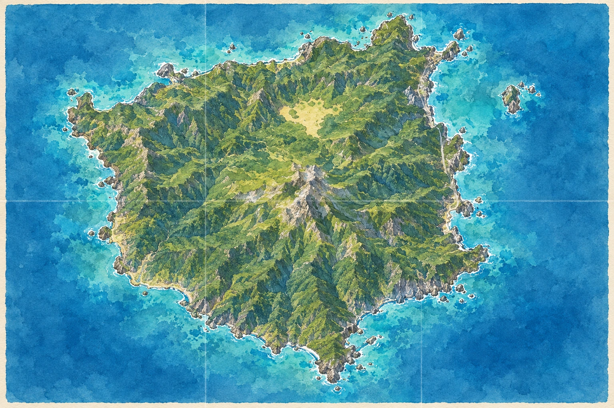

원하는 장소의 봉투부터 열어 주세요.

도움 한 단계에 토큰 하나
날짜와 전시 번호를 구분해 적고, 근거가 된 자료 번호도 남겨 보세요. 여기에 쓴 기록은 이 기기에 저장됩니다.
조사 순서는 자유입니다. 펼친 자료는 언제든 다시 볼 수 있습니다.
장소가 바뀌면 역할을 교대합니다. 조사 중 인원을 바꾸려면 새 조사를 시작하세요.
저장한 조사와 답안, 공동 복원판의 메모를 지우고 네 봉투를 다시 준비합니다.
게임 진행에는 자바스크립트가 필요합니다. 인쇄 구성품으로 종이 게임을 준비할 수 있습니다.